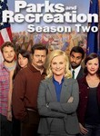
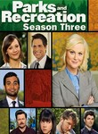

Parks and Recreation
Stephen Klancher
...has seen 22
...has seen 0.4 hours
...has not seen 1.7 hours

Timeline
Most Recent:
Greg Pikitis
First Unseen:
Tom's Divorce (# 17)
...has seen 22
...has seen 0.4 hours
...has not seen 1.7 hours
Timeline
Most Recent:
Greg Pikitis
First Unseen:
Tom's Divorce (# 17)

Stephen Klancher: April 19, 2009 
It's ok. I see the similarities to The Office. I didn't like The Office immediately, so I could imagine this getting better and growing on me.

Stephen Klancher: June 10, 2018
Stephen Klancher: June 10, 2018
Stephen Klancher: June 10, 2018


The Johnny Karate Super Awesome Musical Explosion Show Airs on 2015-02-10
S7 - E10 of Parks and Recreation
S7 - E10 of Parks and Recreation